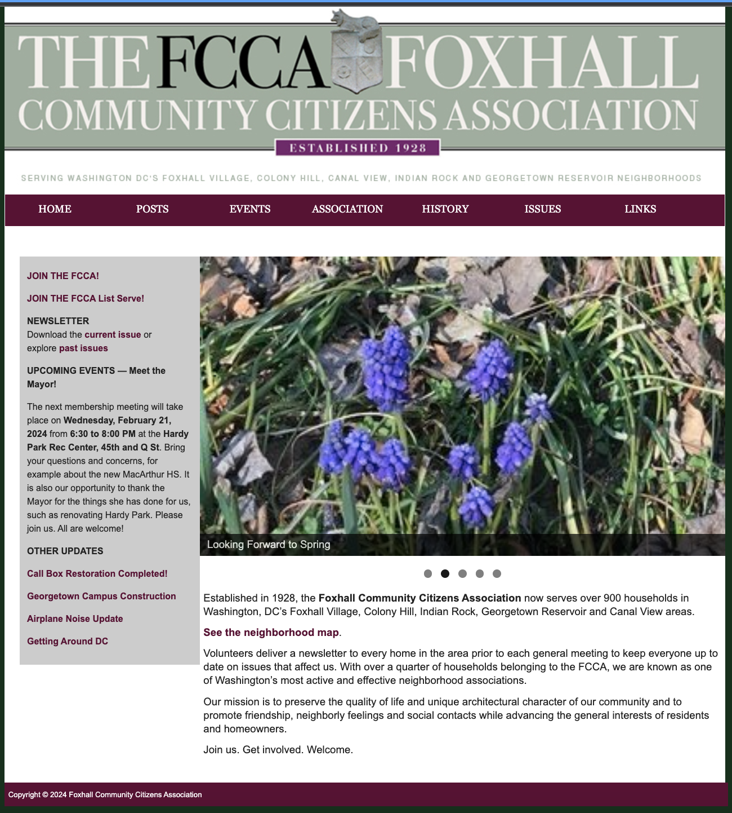
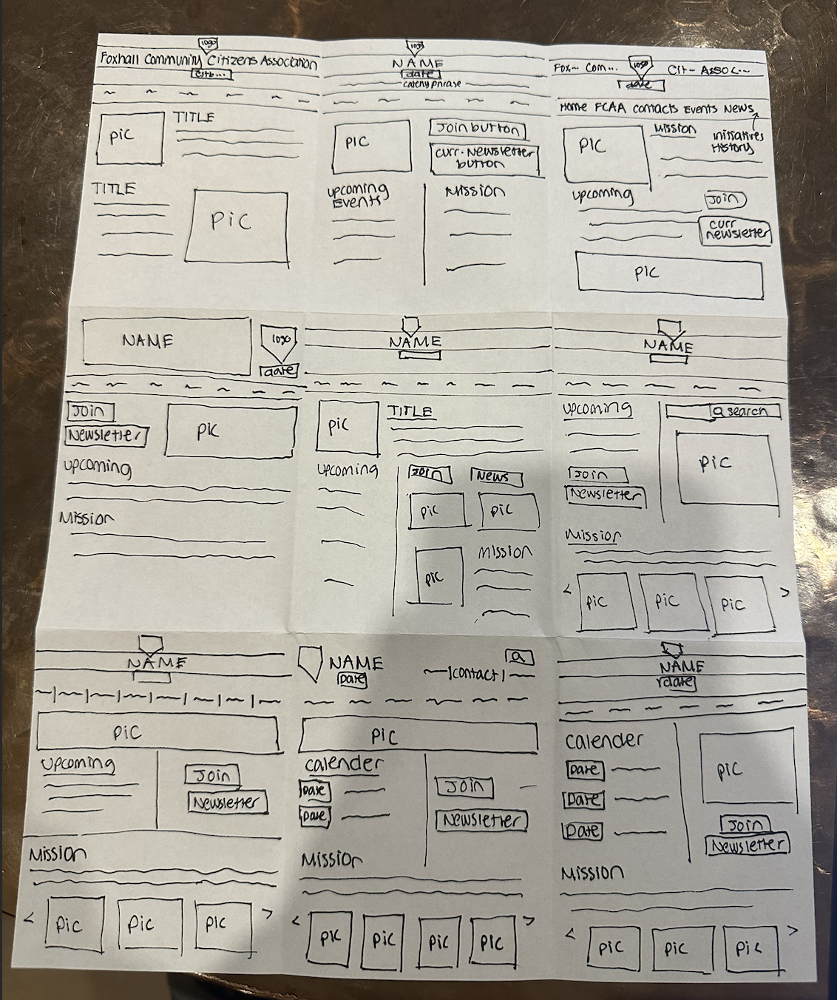
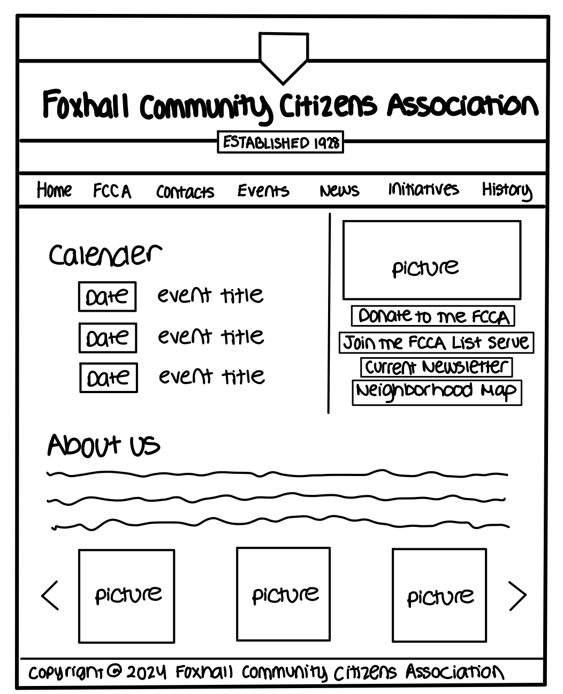
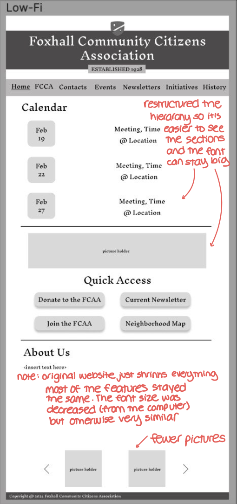
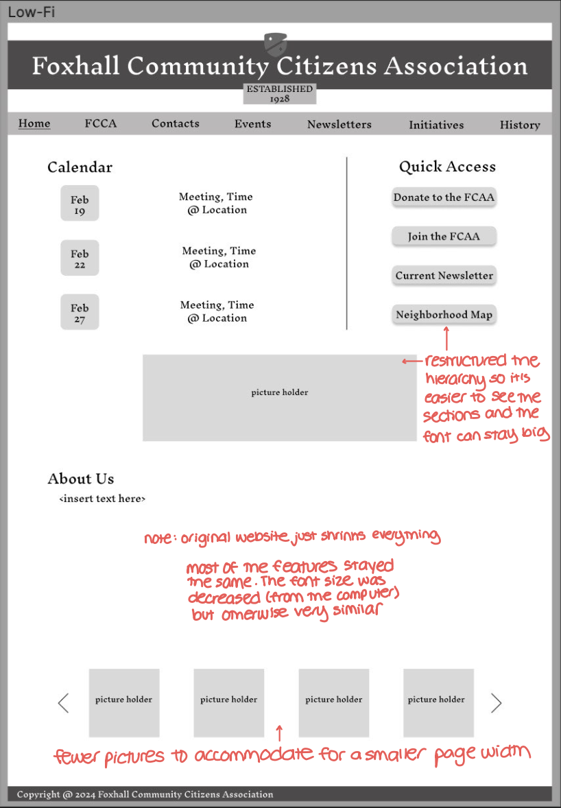
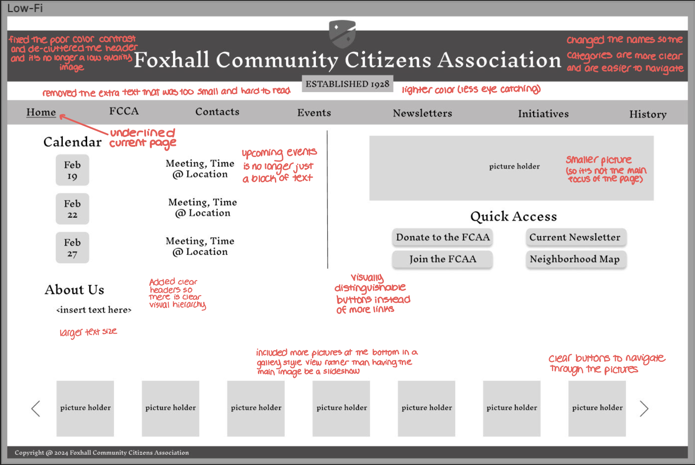
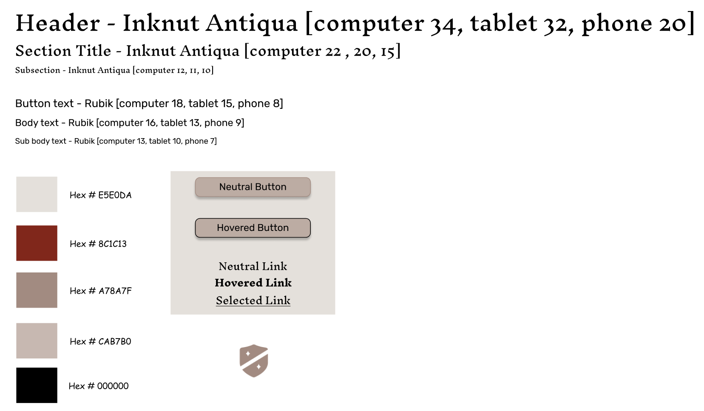
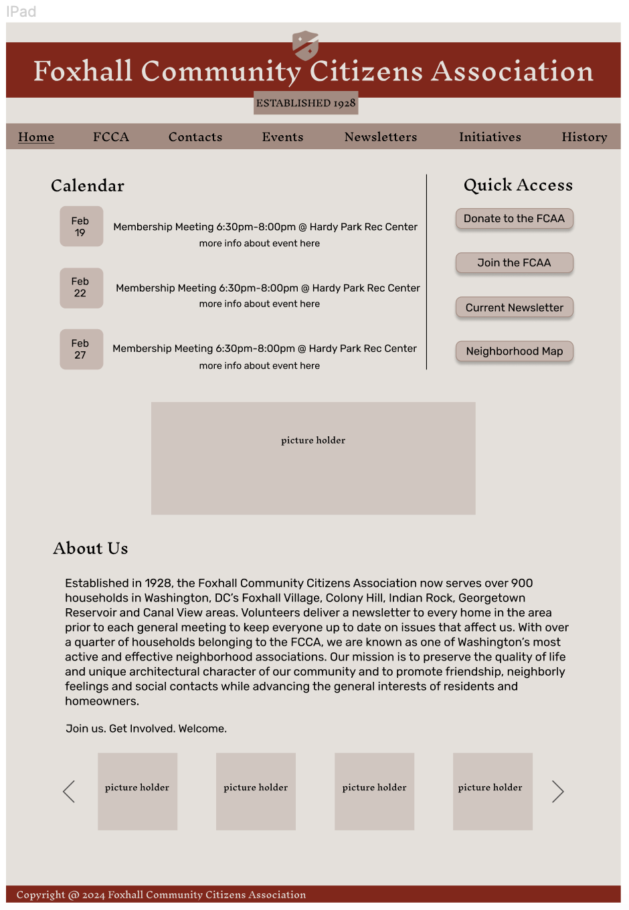
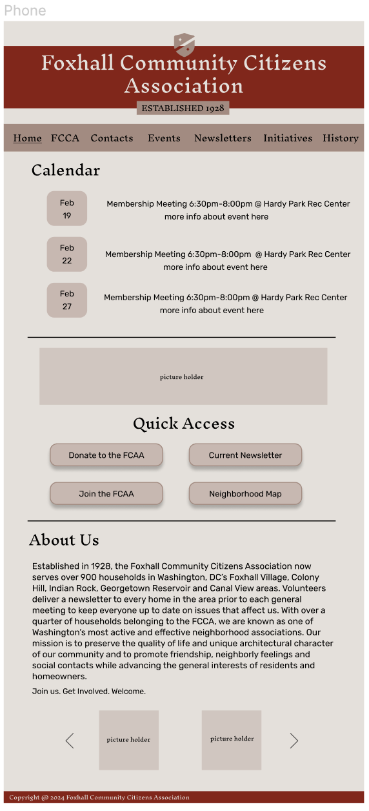
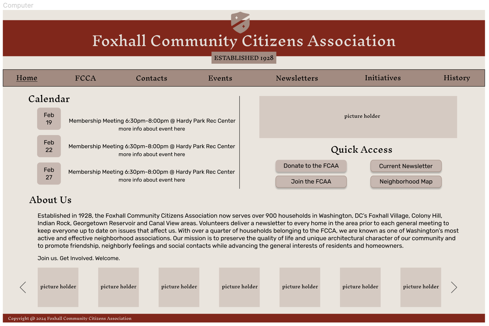

My objective for this project was to redesign a web interface effectively. After selecting a website to redesign, I completed one cycle of the design process: quick sketching, a final sketch, low-fidelity wireframes, and high-fidelity mockups for three different screen sizes (phone, tablet, computer). Then, I created my redesigned, responsive website using HTML and CSS and reflected on the process. I really enjoyed this learning experience. This project helped me develop my understanding of what constitutes an effective versus an ineffective interface design, improve my coding skills, and think critically about my own work.
This is the website for my neighborhood’s community association in Washington D.C. A little while ago I was trying to help my mom donate to the association and we found that the website was very difficult to navigate, which is why I chose it for this project. I hope to present them with this redesign proposal! The original webpage can be found here.
I agree with the problems detected by WebAIM WAVE. Some of the images have empty alternative text boxes or are missing alternative text. Additionally, the text size is too small to read easily. One issue that WebAIM didn’t catch was the low color contrast in the header (white and light green), since the header is just an image. Another related problem is that there’s low color contrast between the maroon red (used to identify links) versus black (regular body text). Lastly, WebAIM didn't identify the general lack of headers (structural hierarchy) which surprised me.
To begin my redesigning process, I started by quickly sketching 9 different designs that came to mind.
Combining my favorite elements from these 9 designs, I drafted a final sketch.
Using my final sketch for inspiration, I created a low fidelity wireframe in grayscale to more formally draft my design ideas.
  Next, I formalized some design ideas in a visual style guide to ensure consistency between different elements on my webpage. The original website seems to emphasize the "historic" nature of the association. To maintain an old-timey feel, I decided to use a brick color scheme since most of the houses in the neighborhood are brick.
Combining my low fidelity wireframes with my visual design style guide, I created high fidelity mockups of my redesigned webpage.
  Overall, I’m really happy with how my responsive, redesigned website turned out. One key difference between my website and my high-fidelity mockups is how I treated my gallery of images, at the bottom of the screen. While I still stand-by my decision to decrease the number of images in the gallery as screen width decreased, I couldn’t implement this functionality due to time-constraints. Some other design choices that I made were to eliminate the drop-down functionality of each category in the navigation bar, as well as changing the names of the categories themselves (to better align with reasons why people might visit the website, e.g. contact information). Additionally, I created a visual hierarchy of information and turned many of the links into a group of visually distinct buttons. I shifted the focus of the page from the somewhat irrelevant image displayed on the original page to more important elements, such as the calendar and the buttons. These design choices significantly increase the efficiency, learnability, and memorability of the webpage.
My redesigned webpage can be found here.
I learned a lot from the process of redesigning this webpage and then building the website. Throughout the designing process I found myself practicing iterative design as I would feel unsatisfied with a certain decision and go back and refine the design. I also stopped by TA hours many times to try and hear different perspectives on my redesign so I could improve it to the best of my ability. I kept an open mind when hearing constructive criticism and factored their feedback into my next iteration of design. Now that I have finished the project and gained a better understanding of HTML and CSS, there are many coding practices that I would implement differently.
I really struggled with the responsiveness part of this project. There is one feature that is not working properly: when the height of the page is decreased (passed a value that is proportional to the width of the screen) some of the elements overlap. I now realize that this is due to some early-stage decisions I made regarding height and width that I would have fixed if I had the time. I plan to re-create this website when I have the time, now that I have a better understanding of divs, margins, padding, etc.